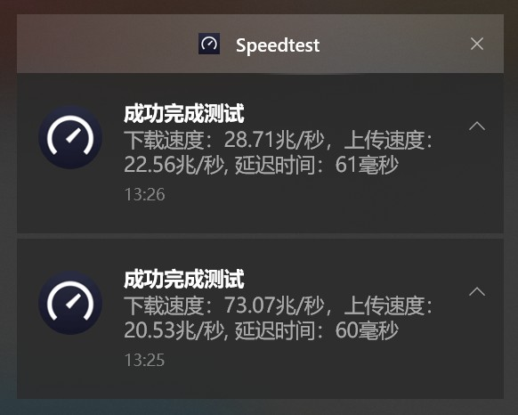
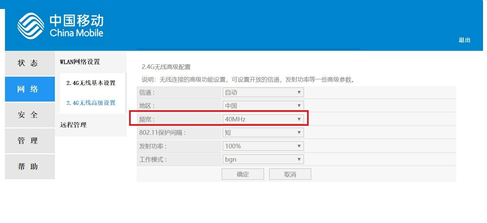
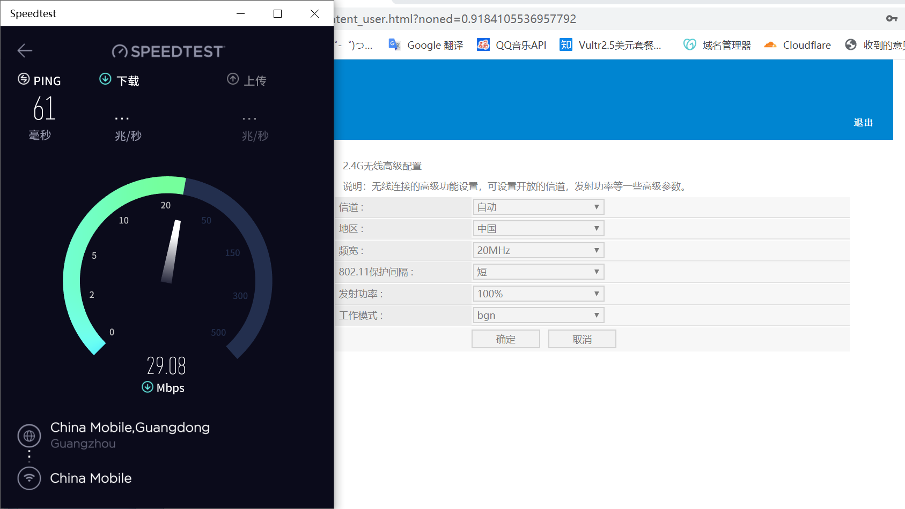
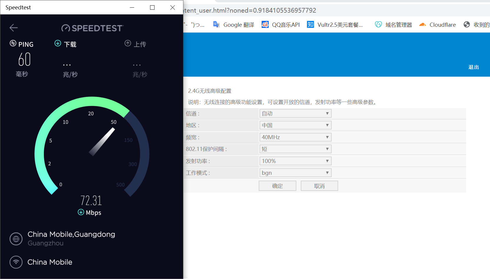

又发现了一个好东西：WLAN频宽
Find Another Good Thing: WLAN Bandwidth
2020/4/23
之前我测速慢死人，但是今天我脑子一抽，想改一下信道，看看能不能提升速度。

对比
然后进入高级设置，之前我记得WLAN分两种频率：2.4GHz和5.8GHz（部分有5.2GHz），这个中国移动的垃圾宽带只提供2.4GHz的无线，然后我看到了"频宽" 
"频宽"设置项
哦豁，还真有用。 直接提速50%+ 
改之前

>改之后